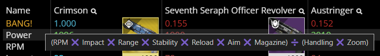

{kind=link}


It is a browser extension designed to add information I find useful to DIM (Destiny Item Manager) .
When comparing weapons in DIM, this extension helped me quickly identify which one was "best".
When comparing two or more weapons, this extension reads each weapon's stats to calculate a score, displays that score below each weapon's name, and lets you sort this new row of numbers. The "best" score is shown in cyan as "1.000" and the numbers get smaller and redder from there.
It updates DIM's "Compare Items" UI (the part circled in green in the screenshot).
To something like this:
| Before | After |
|---|---|
|
|
|
See the green rectangle in the screenshot below? That's where the new stat appears, near the top between the name and the Power stat.
For Combat Bows, the name of this stat is "ARROWS!"
See what names are given to other weapon types!
Prerequisite: The "Compare Items" UI must be open and there must be more than one weapon in it.
 In this screenshot we see a tooltip showing that the Hand Cannon formula is calculated as (RPM ❌ Impact ❌ Range ❌ Stability ❌ Reload ❌ Aim ❌ Magazine) ➗ (Handling ❌ Zoom). The tooltip appears when you hover over the score row's name, in this case "BANG!".
This Hand Cannon formula is derived from my play style, which prefers stats like RPM, Impact, and Stability to be bigger and stats like Handling and Zoom to be smaller.
As a result, Crimson's score is overwhelming because of its high RPM stat.
ℹ️ ProTip: If a weapon is skewing the results, you can remove it. The remaining scores will be automatically recalculated and there will be a new "best" among them.
For those of you who disagree with any of the formulas, or would like more control over them, please let me know if I should prioritize letting you customize the formulas over adding support for armor or other inventory item types.
Click on the row name to sort weapons by their scores. Click again to change the sort order.
Hover over the row name to read the formula in a tooltip.
The scores will recalculate soon after any changes.
If you preview a change by clicking on a perk in DIM, or permanently change a weapon's perks in DIM or in-game, its score will automatically update shortly after DIM updates.
Not as of April 2025, but please let me know if I should prioritize letting you do that, or invite you to send me a pull request if you add that feature yourself.
To draw my attention to underleveled weapons that deserved to be infused.
My biggest time sink in DIM was comparing weapons, so I solved that problem first.
DIM uses an SVG to draw that arrow and I haven't learned how to do SVGs yet, sorry. Also, my code assumes the arrow isn't there, so adding the arrow would break my fragile code. Also, why not just click the row name a few more times until you figure out which way it's sorted?
{kind=link}
{kind=link}